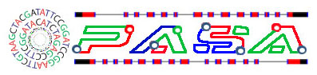

PASA, acronym for Program to Assemble Spliced Alignments, is a eukaryotic genome annotation tool that exploits spliced alignments of expressed transcript sequences to automatically model gene structures, and to maintain gene structure annotation consistent with the most recently available experimental sequence data. PASA also identifies and classifies all splicing variations supported by the transcript alignments.
|
Note
|
Now available: A hybrid approach to transcript reconstruction using genome-guided and de novo RNA-Seq assemblies to generate a comprehensive transcript database. |
|
Note
|
PASA2 was officially released on June 5th, 2013. PASA2 includes many enhancements from the original PASA including extensive use of multi-threading for increased runtime performance, a modified MySQL database structure enabling the storage of multiple high-quality transcript alignments to be used in transcript assembly, and improved integration of Trinity to support RNA-Seq based genome annotation and generation of a comprehensive transcriptome database. |
Table of Contents
Introduction
PASA was originally developed at The Institute for Genomic Research in 2002 as an effort to automatically improve gene structures in Arabidopsis thaliana. Since then, it has been applied to numerous Eukaryotic genome annotation projects including Rice, Aspergillus species, Plasmodium falciparum, Schistosoma mansoni, Aedes aegypti, mouse, human, among others.
Functions of PASA include:
-
model complete and partial gene structures based on assembled spliced alignments.
-
automatically incorporate gene structures based on transcript alignments into existing gene structure annotations, thereby maintaining annotations consistent with experimental evidence. Annotation updates include
-
annotating untranslated regions (UTRs)
-
exon additions, deletions, boundary adjustments
-
addition of models for alternative splicing variants
-
merging genes
-
splitting genes
-
modeling novel genes
-
-
map polyadenylation sites to the genome
-
identify antisense transcripts
-
identify and classify all found splicing variations
-
report a likely set of partial and/or full-length protein-coding genes based on transcript alignments for training ab initio gene prediction tools.
PASA is composed of a pipeline of utilities that perform the following ordered set of tasks:
-
cleaning the transcripts
-
The seqclean utility, developed by the TIGR Gene Index group, is used to identify evidence of polyadenylation and strip the poly-A, trim vector, and discard low quality sequences.
-
-
mapping and aligning transcripts to the genome
-
GMAP and/or BLAT is used to map and align the transcripts to the genome.
-
-
Validate nearly perfect alignments
-
PASA utilizes only near perfect alignments. These alignments are required to align with a specified percent identity (typically 95%) along a specified percent of the transcript length (typically 90%). Each alignment is required to have consensus splice sites at all inferred intron boundaries, including (GT/GC donor with an AG acceptor, or the AT-AC U12-type dinucleotide pairs).
-
-
Maximal assembly of spliced alignments
-
The valid transcript alignments are clustered based on genome mapping location and assembled into gene structures that include the maximal number of compatible transcript alignments. Compatible alignments are those that have identical gene structures in their region of overlap. The products are termed PASA maximal alignment assemblies. Those assemblies that contain at least one full-length cDNA are termed FL-assemblies; the rest are non-FL-assembles.
-
-
Grouping alternatively spliced isoforms
-
Alignment assemblies that map to the same genomic locus, significantly overlap, and are transcribed on the same strand, are grouped into clusters of assemblies.
-
-
Automatic Genome Annotation
-
Given a set of existing gene structure annotations, which may include the latest annotation for a given genome or the results of a single ab-initio gene finder, a comparison to the PASA alignment assemblies is performed. Each alignment assembly is assigned a status identifier based on the results of the annotation comparison. The status identifier indicates whether or not the update is sanctioned as likely to improve the annotation, and the type of update that the assembly provides. There are over 40 different status identifiers (actually, about 20 since half correspond to FL-assemblies and the other half to non-FL-assemblies).
-
In the absence of any preexisting gene annotations, novel genes and alternative splicing isoforms of novel genes can be modeled.
-
At any time, regardless of any existing annotations, users can obtain candidate gene structures based on the longest open reading frame (ORF) found within each PASA alignment assembly. The output includes a fasta file for the proteins and a GFF3 file describing the gene structures. This is useful when applied to a previously uncharacterized genome sequence, allowing one to rapidly obtaining a set of candidate gene structures for training various ab-intio gene prediction programs. In the case of RNA-Seq, PASA can generate a full transcriptome-based genome annotation, identifying likely coding and non-coding transcripts.
-
PASA in the Context of a Complete Eukaryotic Annotation Pipeline
PASA is only one component of a larger eukayotic annotation pipeline. Comprehensive genome annotation relies on more than transcript sequence evidence. Not all genes are expressed under assessed conditions, and some genes are expressed at low levels, which complicates their discovery and proper annotation. Other forms of evidence are required for comprehensive genome annotation, including ab initio gene predictors and homology to proteins previously discovered in other sequenced genomes. A complete annotation pipeline, as implemented at the Broad Institute, involves the following steps:
-
(A) ab initio gene finding using a selection of the following software tools: GeneMarkHMM, FGENESH, Augustus, and SNAP, GlimmerHMM.
-
(B) protein homology detection and intron resolution using the GeneWise software and the uniref90 non-redundant protein database.
-
( C) alignment of known ESTs, full-length cDNAs, and most recently, Trinity RNA-Seq assemblies to the genome.
-
(D) PASA alignment assemblies based on overlapping transcript alignments from step ( C)
-
(E) use of EVidenceModeler (EVM) to compute weighted consensus gene structure annotations based on the above (A, B, C, D)
-
(F) use of PASA to update the EVM consensus predictions, adding UTR annotations and models for alternatively spliced isoforms (leveraging D and E).
-
(G) limited manual refinement of genome annotations (F) using Argo or Apollo
The following review of eukaryotic genome annotation methods describes in detail the use of PASA in the context of a more complete eukaryotic genome annotation system - see Haas et al., Mycology. 2011 Oct 3;2(3):118-141.
The use of PASA in both applications: first assembling transcript alignments into PASA alignment assemblies, and then later using those PASA assemblies to update EVM consensus (or other) annotations, are described below.
System Overview
PASA runs on a UNIX/LINUX-based architecture (including mac-osx). PASA involves components written in Perl and C++. Utilities used by PASA, including GMAP, are wrapped by Perl code. Results are provided in summary text files including use of standard formats such as gtf, gff3, bed, fasta, and others. Results are further available for analysis using the companion suite of Web-based tools and command-line utilities. Running PASA to generate alignment assemblies requires only two inputs: the targeted genome in FASTA format and the inputted transcripts (ESTs, de novo RNA-Seq assemblies, etc.) in FASTA format.
In order to compare the assemblies to existing gene structure annotations, and optionally enhance known structures by adding UTRs, alt-splice variants, and exon adjustments, preexisting gene structure annotations can be provided in GFF3 format, or imported by a user-customized data adapter (described below).
Sample data and a preconfigured complete PASA pipeline are available for demonstration purposes, all included in the software distribution.
Obtaining PASA
Download the latest version of the PASA software straight from Sourceforge
Software Installation Instructions
Prerequisite Software Components
In addition to the PASA software obtained here, you will need the following:
-
Relational Database
-
MySQL (www.mysql.com)
-
create a user/password with read-only access
-
create a user/password with all privileges
-
-
-
Perl Modules from CPAN (www.cpan.org):
-
DBD::mysql
-
-
Bioinformatics Tools:
-
Tom Wu’s GMAP cdna alignment utility.
-
Jim Kent’s BLAT aligner
-
Bill Pearson’s FASTA general sequence alignment utility. Note that the fasta utility is bundled with other utilites as part of the Fasta3 suite. The fasta utility (ie. named fasta35) should be renamed (or symlinked to) fasta. This utility is required for annotation comparisons, but not needed for alignment assembly or alt-splicing analysis.
-
|
Note
|
The utilities provided by each software package above should be available via your PATH setting. |
Unravelling the PASA distribution
Move the PASA distribution to a location on your filesystem that we can call PASAHOME, such as /usr/local/bin/PASA. From henceforth, we’ll refer to this location as $PASAHOME.
Build the components of PASA that require compilation by running:
makein the $PASAHOME directory. This will build the utilities: pasa, slclust, cdbyank, and cdbfasta, and place them in the $PASAHOME/bin directory.
-
Optional: seqclean $PASAHOME/seqclean provides the seqclean sofware developed by the TIGR Gene Index Group, and distributed along with PASA by permisson of John Quackenbush. This is needed for cleaning EST sequences and identifying candidate polyadenylation sites. Install the software by following the instructions provided.
Configuring the PASA Pipeline
After installing each of the software tools above, all that is needed before running PASA is to configure it. The PASA configuration relies on the file: $PASAHOME/pasa_conf/conf.txt
A template configuration file is provided at
$PASAHOME/pasa_conf/pasa.CONFIG.templateSimply copy pasa.CONFIG.template to conf.txt and set the values for your MySQL database settings. You only need concern yourself with the following values:
PASA_ADMIN_EMAIL=(your email address)MYSQLSERVER=(your mysql server name)
MYSQL_RO_USER=(mysql read-only username)
MYSQL_RO_PASSWORD=(mysql read-only password)
MYSQL_RW_USER=(mysql all privileges username)
MYSQL_RW_PASSWORD=(mysql all privileges password)Setting Up the PASA Web Portal (optional, but highly recommended)
The PASA web portal provides a number of useful reports, search capabilities, and visualizations that can help with exploring the PASA assemblies and proposed annotation updates. Visit the Tour of the PASA web portal for examples.
The PASA web portal requires a webserver such as Apache (www.apache.org), and the GD PERL module to be installed.
To install the web portal code, recursively copy (cp -r) the $PASAHOME area to the cgi-bin directory of your webserver. Change permissions on everything so that it is world executable (ie. % chmod -R 755 ./PASA ) Now, visit the URL for the status report page for the pasa database you created during the pasa run above.
This will provide some summary statistics and links to additional web-based utilities for navigating the results from your pasa run.
Now that you have a URL for your base PASA url, update your original configuration file at: $PASAHOME/pasa_conf/conf.txt to set the value of BASE_PASA_URL=http://yourServerName/cgi-bin/PASA/cgi-bin/
For more info, visit the Tour of the PASA web portal
Running the Alignment Assembly Pipeline
-
As input to the command-line driven PASA pipeline, we need only two (potentially three) input files.
-
The genome sequence in a multiFasta file (ie. genome.fasta)
-
The transcript sequences in a multiFasta file (ie. transcripts.fasta)
-
Optional: a file containing the list of accessions corresponding to full-length cDNAs (ie. FL_accs.txt)
-
Step A: cleaning the transcript sequences [Optional, requires seqclean to be installed]
Have each of these files in the same working directory. Then, run the seqclean utility on you transcripts like so:
% seqclean transcripts.fastaIf you have a database of vector sequences (ie. UniVec), you can screen for vector as part of the cleaning process by running the following instead:
% seqclean transcripts.fasta -v /path/to/your/vectors.fastaThis will generate several output files including transcripts.fasta.cln and transcripts.fasta.clean Both of these can be used as inputs to PASA.
Step B: Walking Thru A Complete Example Using the Provided Sample Data
Sample inputs are provided in the $PASAHOME/sample_data directory. We’ll use these inputs to demonstrate the breadth of the software application, including using sample DATA ADAPTERs to import existing gene annotations into the database, and tentative structural updates out.
The PASA pipeline requires separate configuration files for the alignment assembly and later annotation comparison steps, and these are configured separately for each run of the PASA pipeline, setting parameters to be used by the various tools and processes executed within the PASA pipeline. Configuration file templates are provided as $PASAHOME/pasa_conf/pasa.alignAssembly.Template.txt and $PASAHOME/pasa_conf/pasa.annotationCompare.Template.txt, and these will be further described when used below.
The next steps explain the current contents of the sample_data directory. You do NOT need to redo these operations:
-
I’ve copied the ../pasa_conf/pasa.alignAssembly.Template.txt to alignAssembly.config and edited the pasa database name to sample_mydb_pasa.
-
My required input files exist as: genome_sample.fasta, all_transcripts.fasta, and since I have some full-length cDNAs, I’m including FL_accs.txt to identify these as such.
-
I already ran seqclean to generate files: all_transcripts.fasta.clean and all_transcripts.fasta.cln
The following steps, you must execute in order to demonstrate the software. (The impatient can execute the entire pipeline below by running ./run_sample_pipeline.pl. If this is your first time through, it helps to walk through the steps below instead.)
Transcript alignments followed by alignment assembly
-
Run the PASA alignment assembly pipeline like so:
% ../scripts/Launch_PASA_pipeline.pl -c alignAssembly.config -C -R -g genome_sample.fasta \ -t all_transcripts.fasta.clean -T -u all_transcripts.fasta -f FL_accs.txt --ALIGNERS blat,gmap --CPU 2
|
Note
|
The --ALIGNERS can take values gmap, blat, or gmap,blat, in which case both aligners will be executed in parallel. The CPU setting determines the number of threads to be used for each process. This is passed on to GMAP to indicate the thread count. In the case of BLAT, the transcript database is split into CPU number of partitions and each partition is searched separately and in parallel using BLAT. Also, note that if gmap,blat is specified, then you may have up to 2*CPU number of processes running simultaneously. |
This executes the following operations, generating the corresponding output files: - aligns the all_transcripts.fasta file to genome_sample.fasta using the specified alignment tools. Files generated include: * sample_mydb_pasa.validated_transcripts.gff3,.gtf,.bed :the valid alignments * sample_mydb_pasa.failed_gmap_alignments.gff3,.gtf,.bed :the alignments that fail validation test * alignment.validations.output :tab-delimited format describing the alignment validation results
-
the valid alignments are clustered into piles based on genome alignment position and piles are assembled using the PASA alignment assembler. Files generated include:
-
sample_mydb_pasa.assemblies.fasta :the PASA assemblies in FASTA format.
-
sample_mydb_pasa.pasa_assemblies.gff3,.gtf,.bed :the PASA assembly structures.
-
sample_mydb_pasa.pasa_alignment_assembly_building.ascii_illustrations.out :descriptions of alignment assemblies and how they were constructed from the underlying transcript alignments.
-
sample_mydb_pasa.pasa_assemblies_described.txt :tab-delimited format describing the contents of the PASA assemblies, including the identity of those transcripts that were assembled into the corresponding structure.
-
Annotation Comparisons and Annotation Updates
Incorporating PASA Assemblies into Existing Gene Predictions, Changing Exons, Adding UTRs and Alternatively Spliced Models
The PASA software can update any preexisting set of protein-coding gene annotations to incorporate the PASA alignment evidence, correcting exon boundaries, adding UTRs, and models for alternative splicing based on the PASA alignment assemblies generated above.
Loading your preexisting protein-coding gene annotations
Comparing to and updating existing gene structure annotations requires that we import these annotations into the PASA database, and are able to extract the suggested updates. PASA utlizes annotation data adapters to achieve this. GFF3 data adapters are included in the PASA distribution, but you can write your own, and directly tie the PASA pipeline to your own informatics infrastructure (ie. other relational database). If you’d prefer to not use GFF3 and to write your own data adapters, visit the PASA data adapter cookbook.
A sample gff3-formatted annotation file is provided in our sample_data directory as orig_annotations_sample.gff3 and can be loaded like so:
% ../scripts/Load_Current_Gene_Annotations.dbi -c alignAssembly.config -g genome_sample.fasta -P orig_annotations_sample.gff3Before loading your own GFF3-formatted annotation files, be sure to check them for PASA compatibility like so:
% ../misc_utilities/pasa_gff3_validator.pl orig_annotations_sample.gff3The above gff3-validator will report any entries in your gff3 file that it does not recognize, understand, or otherwise parse properly. It’s not a general purpose gff3-validator since it cares only about your protein-coding genes. (note that you should only feed protein-coding genes to PASA using the loader above).
Performing an annotation comparison and generating an updated gene set
Now that the original annotations are loaded, we can perform a comparison of the PASA alignment assemblies to these preexisting gene annotations, to identify cases where updates can be automatically performed to gene structures in order to incorporate the transcript alignments.
I’ve copied the ../pasa_conf/pasa.annotationCompare.Template.txt file to our working directory as annotCompare.config. Then, I replaced the MYSQLDB=<MYSQLDB> line with MYSQLDB=sample_mydb_pasa as before with the alignAssembly.config file. Notice this config file contains numerous parameters that can be modified to tune the process to any genome of interest. We’ll leave these values untouched for now, relying on the defaults used by PASA, and we’ll revisit parameterization later. For most purposes, the defaults are well suited. Run the annotation comparison like so:
% ../scripts/Launch_PASA_pipeline.pl -c annotCompare.config -A -g genome_sample.fasta -t all_transcripts.fasta.cleanOnce the annotation comparison is complete, PASA will output a new GFF3 file that contains the PASA-updated version of the genome annotation, including those gene models successfully updated by PASA, and those that remained untouched. This file will be named ${mysql_db}.gene_structures_post_PASA_updates.$pid.gff3, where $pid is the process ID for this annotation comparison computation.
You should revisit the status_report.cgi web page as described above under Setting Up the PASA Web Portal. There, you will be able to navigate the results of the comparison and examine the classifications for annotation updates assigned to each pasa alignment assembly.
|
Note
|
It usually requires at least two cycles of annotation loading, annotation comparison, and annotation updates in order to maximize the incorporation of transcript alignments into gene structures. Updates made to gene structures in the first round often lead to the capacity to incorporate additional transcript alignments that did not fit well in the context of the earlier gene structures. You can use the PASA-updated annotations in the GFF3 file created at the end of the annotation comparison step as input for a subsequent annotation comparison round. All of the results from the separate annotation comparison rounds remain accessible via the PASA web portal (see below). The sample pipeline execution provided as run_sample_pipeline.pl runs the annotation comparison step twice, leveraging the output from the previous round in the subsequent round. |
Leveraging RNA-Seq by the PASA Pipeline
Illumina RNA-Seq is quickly revolutionizing gene discovery and gene structure annotation in eukaryotes. Recent enhancements to the PASA pipeline including advancements in RNA-Seq de novo assembly now enable it to make use of these data for gene structure annotation. It is now relatively straightforward to generate strand-specific RNA-Seq data via Illumina. Given the great utility of strand-specific data in differentiating between sense and antisense transcription, plus given the great depth of transcriptome sequencing coverage and the great prevalence of antisense transcription, strand-specific RNA-Seq data is highly preferred by the PASA pipeline. PASA can still be used quite effectively in the case of non-strand-specific RNA-Seq, but the execution is quite different (see below). The dUTP strand-specific RNA-Seq method by Parkhomchuk et al., NAR, 2009 is recommended. For a comparison of strand-specific methods, see Comprehensive comparative analysis of strand-specific RNA sequencing methods. by Levin et al, Nat Methods, 2010.
The procedure for leveraging RNA-Seq in the PASA pipeline is very straightforward. First, assemble the RNA-Seq data using our new Trinity de novo RNA-Seq assembly software. The RNA-Seq assembly process can be performed in either a genome-guided (recommended) or genome-free way. Documentation for Trinity RNA-Seq assembly (genome-guided or genome-free) is provided at http://trinityrnaseq.sourceforge.net/genome_guided_trinity.html. Instructions for assembly of strand-specific and non-strand-specific RNA-Seq are provided.
Strand-specific RNA-Seq
In the case of strand-specific RNA-Seq, run PASA with the Trinity transcript assemblies as input, including the --transcribed_is_aligned_orient parameter, to indicate that the Trinity transcripts were directionally assembled:
% ../scripts/Launch_PASA_pipeline.pl -c alignAssembly.config -C -R -g genome_sample.fasta --ALIGNERS blat,gmap\
-t Trinity.fasta --transcribed_is_aligned_orientThe above will cluster and assemble alignments with minimal overlap. If your gene density is high and you expect transcripts from neighboring genes to often overlap in their UTR regions, you can perform more stringent clustering of alignments like so:
% ../scripts/Launch_PASA_pipeline.pl -c alignAssembly.config -C -R -g genome_sample.fasta --ALIGNERS blat,gmap\
-t Trinity.fasta --transcribed_is_aligned_orient \
--stringent_alignment_overlap 30.0Also, as an alternative, If you have existing gene structure annotations that are reasonably accurate, you can cluster Trinity assemblies by locus (annotation-informed clustering) and further augment full-length transcript reconstruction from overlapping inchworm assemblies like so, with the alternative run command:
% ../scripts/Launch_PASA_pipeline.pl -c alignAssembly.config -C -R -g genome_sample.fasta --ALIGNERS blat,gmap\
-t Trinity.fasta --transcribed_is_aligned_orient \
-L --annots_gff3 coding_gene_annotations.gff3 \
--gene_overlap 50.0Non-Strand-specific RNA-Seq
In the case of non-strand-specific RNA-Seq, simply exclude the --transcribed_is_aligned_orient parameter and run like so:
% ../scripts/Launch_PASA_pipeline.pl -c alignAssembly.config -C -R -g genome_sample.fasta -t Trinity.fasta --ALIGNERS blat,gmapBuild a Comprehensive Transcriptome Database Using Genome-guided and De novo RNA-Seq Assembly
Depending on the genome and transcriptome samples under study, the genome may provide a limited view into the transcriptome. Our comprehensive transcriptome database-generating pipeline aims to:
-
Capture transcripts for genes missing from the genome (difficult to sequence regions, novel transcripts existing in the sample, etc).
-
Capture transcripts that align partially to the genome with exons falling into sequencing gaps.
-
Capture transcripts that cannot otherwise be represented properly according to the reference genome due to karyotype differences (ex. genome translocations).
The transcripts are identified and included along with the PASA assemblies yielding a more comprehensive transcriptome database, to be used for downstream investigations into expressed gene content and differential expression analyses.
Our system for building the comprehensive transcriptome database requires multiple sources of inputs: 1. Trinity de novo RNA-Seq assemblies (ex. Trinity.fasta), 2. Trinity genome-guided RNA-Seq assemblies (ex. Trinity.GG.fasta), and (optionally) 3. Cufflinks transcript structures (ex. cufflinks.gtf).
|
Note
|
When applying Trinity to RNA-Seq samples derived from microbial eukaryotes, using either genome-free or genome-guided de novo assembly, be sure to use the --jaccard_clip parameter to reduce the occurrence of falsely-fused genome-neighboring transcripts. Also, only include Cufflinks transcripts if applying the approach to expansive genomes of animals such as mouse or human, and exclude Cufflinks from application to compact microbial eukaryotic genomes. |
After generating the inputs according to their separate procedures linked above, you can run PASA according to the following steps:
-
Concatenate the Trinity.fasta and Trinity.GG.fasta files into a single transcripts.fasta file.
cat Trinity.fasta Trinity.GG.fasta > transcripts.fasta -
Create a file containing the list of transcript accessions that correspond to the Trinity de novo assembly (full de novo, not genome-guided).
$PASA_HOME/misc_utilities/accession_extractor.pl < Trinity.fasta > tdn.accs -
Run PASA using RNA-Seq related options as described in the section above, but include the parameter setting --TDN tdn.accs. To (optionally) include Cufflinks-generated transcript structures, further include the parameter setting --cufflinks_gtf cufflinks.gtf. Note, Cufflinks may not be appropriate for gene-dense targets, such as in fungi; Cufflinks excels when applied to vertebrate genomes, so best to include when applying to mouse or human.
-
After completing the PASA alignment assembly, generate the comprehensive transcriptome database via:
$PASA_HOME/PASA/scripts/build_comprehensive_transcriptome.dbi -c alignAssembly.config -t transcripts.fasta --min_per_ID 95 --min_per_aligned 30
This examines the Trinity de novo assemblies (specified by the --TDN parameter in the PASA run). The following groupings are performed:
-
Those TDN accessions mapping at above the --min_per_ID and -min_per_aligned values but otherwise failing the stringent alignment validation requirements (splice sites, contiguity, etc) are assigned to PASA assembly clusters (genes) based on exon overlap. Those not mapping to PASA assemblies retain their gene identifier assigned as the Trinity component. Likewise, those TDN entries that map poorly to the genome (below --min_per_id and min_per_aligned criteria) or do not map to the genome at all are assigned gene identifers based on the Trinity component identifier. PASA assemblies and those TDN entries that were not included in PASA assemblies (not mapping or invalid alignments) are reported as a single data set.
The resulting data files should include:
compreh_init_build/compreh_init_build.fasta :the transcript sequences
compreh_init_build/compreh_init_build.geneToTrans_mapping :the gene/transcript mapping file (for use with RSEM, Trinotate, other tools)compreh_init_build/compreh_init_build.bed :transcript structures in bed format
compreh_init_build/compreh_init_build.gff3 :transcript structures in gff3 formatcompreh_init_build/compreh_init_build.details :classifications of transcripts according to genome mapping status.The classifications include:
pasa : PASA alignment assembly
InvalidQualityAlignment_YES_PASAmap : invalid alignment that maps at percent identity and alignment length requirement, and overlaps a PASA exon
InvalidQualityAlignment_NO_PASAmap : same as above, but doesn't map to a PASA exon
PoorAlignment_TreatUnmapped : invalid alignment that does not meet percent identity and length requirements (potentially missing from genome)
TDN_noMap : no alignment to the genome reported (missing from the genome).Tour of the PASA web portal
The results from running PASA on our sample data set can be examined via the PASA web portal. For example purposes, I’ve saved a few of the reports generated by the PASA web displays (note pages are generated on-the-fly, however these are provided as static only for example purposes).
-
Summary report for alignment assembly and each annotation comparison: status_report.html
-
Description of an individual alignment assembly as compared to an existing annotation: assembly_report_example.html
-
Classification of an alternatively spliced gene: alt_splice_example.html
The above are just a few examples. Install the PASA portal and navigate your PASA results.
Polyadenylation Sites Mapped to the Genome
If seqclean was used to clean the transcript sequences, and both the cleaned and original transcript databases were provided in the alignment assembly run of the PASA pipeline as described, then the polyadenylation sites as evidenced in the original transcript sequences and identified as part of the seqclean process were mapped to the genome. The termini of the polyadenylated transcripts are compared to the genome, and those transcripts that truly appear to be polyadenylated and not resulting from an artifact of internal priming to an A-rich region, are reported as candidate polyA sites. The genome coordinate reported as the polyA site is the nucleotide to which polyA is added, so it corresponds to the last non-polyA nucleotide of the polyadenylated transcript. An example of a candidate polyA site can be extracted from one of the log files (default pasa_run.$pid.log/polyAsite_analysis.out) like so:
// cdna:gi|51968615|dbj|AK175237.1|, annotdb_asmbl_id:68712, polyAcoord:50443, transcribedOrient:+, rend
CGCTTCTTATattacagggt
CGCTTCTTATAAAAAAAAAA gi|51968615|dbj|AK175237.1| TransOrient (+)
trimmedSeq:
AAAAAAAAAA
OK polyA site candidate.An additional fasta file (default ${mysql_db}.polyAsites.fasta) summarizes all mapped polyA sites supported by the transcripts. A 100 bp segment of the genome sequence is extracted and oriented, and the last nucleotide in uppercase corresponds to the residue to which polyA is added in the processed transcript. The site corresponding to our example above is as follows:
>68712-50443_+ 1 transcripts: gi|51968615|dbj|AK175237.1|
ATCGACCACCCTCTTTTTTATAAGTAACTTTTCAAGATAACGCTTCTTATattacagggtctacttccattacaaatgcaataggtttgatggttaataaThe accession is bundled like so:
genome_accession - polyA_coordinate _ transcribed_orientationThe rest of the header indicates the number of transcripts supporting this polyA site followed by the list of those transcript accessions. The examples above were extracted from our sample data set provided. A more compelling example for Arabidopsis, using spliced transcripts only, is as follows:
>chr5-506542_- 44 transcripts: gi|86086725|gb|DR382484.1|DR382484,gi|86082384|gb|DR378143.1|DR378143,gi|86082270|gb|DR378029.1|DR378029,gi|86082193|gb|DR377952.1|DR37795
2,gi|86082172|gb|DR377931.1|DR377931,gi|86082156|gb|DR377915.1|DR377915,gi|86082123|gb|DR377882.1|DR377882,gi|86082071|gb|DR377830.1|DR377830,gi|86081971|gb|DR377730.
1|DR377730,gi|86081887|gb|DR377646.1|DR377646,gi|86081885|gb|DR377644.1|DR377644,gi|86081868|gb|DR377627.1|DR377627,gi|86081709|gb|DR377466.1|DR377466,gi|86081657|gb|
DR377414.1|DR377414,gi|86081635|gb|DR377392.1|DR377392,gi|86081559|gb|DR377316.1|DR377316,gi|86081550|gb|DR377307.1|DR377307,gi|86081543|gb|DR377300.1|DR377300,gi|860
81529|gb|DR377286.1|DR377286,gi|86081252|gb|DR377009.1|DR377009,gi|86081247|gb|DR377004.1|DR377004,gi|86081239|gb|DR376996.1|DR376996,gi|86079014|gb|DR374771.1|DR3747
71,gi|86076986|gb|DR372743.1|DR372743,gi|85870703|gb|DR191655.1|DR191655,gi|85869935|gb|DR190887.1|DR190887,gi|85869920|gb|DR190872.1|DR190872,gi|85869608|gb|DR190560
.1|DR190560,gi|85869452|gb|DR190404.1|DR190404,gi|85869353|gb|DR190305.1|DR190305,gi|85869352|gb|DR190304.1|DR190304,gi|85869340|gb|DR190292.1|DR190292,gi|85869337|gb
|DR190289.1|DR190289,gi|85869336|gb|DR190288.1|DR190288,gi|85869335|gb|DR190287.1|DR190287,gi|85869329|gb|DR190281.1|DR190281,gi|85868471|gb|DR189423.1|DR189423,gi|85
867798|gb|DR188750.1|DR188750,gi|85867058|gb|DR188010.1|DR188010,gi|49285508|gb|BP634256.1|BP634256,gi|32888810|gb|CB264037.1|CB264037,gi|32888295|gb|CB263522.1|CB263
522,gi|32885705|gb|CB260932.1|CB260932,gi|32885650|gb|CB260877.1|CB260877
GTTTTATCTTTGTGACTTTATTAATCCTAAGACTATTATGGGTTTGTATTaaagtttgcttctttcttgctcactacacaattaagattcaagcccattg|
Note
|
Polyadenylation sites identified here require that there is evidence of polyadenylation in the original transcript sequence. Other systems examine clusters of transcript alignment termini within windows. This is not done here yet as part of PASA. Only those polyA sites supported by experimental evidence of polyadenylation are reported. Also, the poly-A analysis modules were built based on EST sequencing and are not yet updated for use with next-gen RNA-Seq analysis. |
Identification and Classification of All Alternative Splicing Variations
PASA is a tool well suited to the identification and classification of alternative splicing isoforms as evidenced by incompatible transcript alignments. Overlapping alignments found incompatible in that they have some structural difference within their overlapping region, and due to their nature of incompatibility, they are relegated to different but overlapping alignment assemblies. PASA performs and all-vs-all comparison among the clustered overlapping alignment assemblies to identify the following categories of splicing variations:
-
alternative donor or acceptor
-
retained or spliced intron
-
starts or ends in an intron
-
skipped or retained exons
-
alternate terminal exons
The automated alternative splicing analysis is run as part of the alignment-assembly pipeline.
The results are available in the default output files, with examples below shown from the sample_data/ pipeline run:
File ${mysql_db}.alt_splice_label_combinations.dat :a tab-delimited listing that contains all unique splicing labels for each pasa alignment assembly labeled with a variation. For example:
genome pasa_acc assembly_cluster combinations_of_labels
68711 asmbl_2 1 ends_in_intron
68711 asmbl_6 3 alt_donor
68711 asmbl_4 3 alt_donor
68711 asmbl_10 6 alt_acceptor, retained_exon, skipped_exon
68711 asmbl_11 6 alt_acceptor, retained_exon, skipped_exon
68711 asmbl_9 6 alt_acceptor, retained_exon, skipped_exon
68711 asmbl_24 14 spliced_intron, starts_in_intron
68711 asmbl_23 14 retained_intron
...File ${mysql_db}.indiv_splice_labels_and_coords.dat provides the genome coordinates for each alternative splicing label applied to each corresponding pasa alignment assembly. For example:
genome_acc pasa_acc assembly_cluster altsplice_label genome_lend genome_rend transcribed_orient list_of_cdnas_supporting_variation
68711 asmbl_10 6 alt_acceptor 35633 35634 - gi|42468094|emb|BX819464.1|CNS0A8YA
68711 asmbl_11 6 alt_acceptor 35639 35640 - gi|6782248|emb|AJ271597.1|ATH271597
68711 asmbl_10 6 retained_exon 35448 35498 - gi|42468094|emb|BX819464.1|CNS0A8YA,gi|42528978|gb|BX835128.1|BX835128
68711 asmbl_11 6 skipped_exon 35448 35498 - gi|6782248|emb|AJ271597.1|ATH271597
68711 asmbl_10 6 retained_exon 36174 36227 - gi|42468094|emb|BX819464.1|CNS0A8YA,gi|42532609|gb|BX838526.1|BX838526
68711 asmbl_11 6 skipped_exon 36174 36227 - gi|6782248|emb|AJ271597.1|ATH271597
68711 asmbl_11 6 retained_exon 36268 36309 - gi|6782248|emb|AJ271597.1|ATH271597
68711 asmbl_10 6 skipped_exon 36268 36309 - gi|42468094|emb|BX819464.1|CNS0A8YA,gi|42532609|gb|BX838526.1|BX838526
68711 asmbl_11 6 retained_exon 36879 37028 - gi|6782248|emb|AJ271597.1|ATH271597
68711 asmbl_10 6 skipped_exon 36879 37028 - gi|42468094|emb|BX819464.1|CNS0A8YA,gi|42532609|gb|BX838526.1|BX838526
68711 asmbl_10 6 alt_acceptor 35633 35634 - gi|42468094|emb|BX819464.1|CNS0A8YA
68711 asmbl_9 6 alt_acceptor 35639 35640 - gi|11125656|emb|AJ294534.1|ATH294534,gi|13398925|emb|AJ276619.1|ATH276619
...The PASA web portal provides numerous reports, graphs, and illustrations to navigate the results of the automated alternative splicing analysis.
Only Interested in Alignment Assembly?
In our current working directory, there’s a file clusters_of_valid_alignments.txt that contains all the clusters of valid alignments in a simple text format like so:
// cluster: number
accession,transcribed_orientation,lend-rend,lend-rend,...
...The transcribed orientation is +,-, or ?. The ? orientation should be used only for single-exon transcript alignments for which the orientation of transcription is ambiguous. By default, PASA assigns all single-exon transcripts that lack evidence of polyadenylation to the ambiguous transcribed orientation. Given this input file, we can demonstrate the pasa alignment assembler like so:
% ../scripts/pasa_alignment_assembler_textprocessor.pl < clusters_of_valid_alignments.txtEach cluster of transcript alignments is assembled separately and the results are outputted to stdout with illustrations.
Example input
// cluster: 52
gi|14532493|gb|AY039871.1|,-,38468-38715,38808-39953
gi|14532527|gb|AY039888.1|,-,38468-38715,38808-39953
gi|18655376|gb|AY077666.1|,-,38846-39847
gi|19801675|gb|AV782885.1|AV782885,-,38468-38715,38808-39255
gi|19839856|gb|AV805871.1|AV805871,-,38478-38715,38808-38972
gi|19861773|gb|AV819822.1|AV819822,-,38496-38715,38808-39021
gi|19864228|gb|AV822195.1|AV822195,?,39309-39953
gi|21403701|gb|AY084991.1|,-,38331-38715,38912-39950
gi|32362537|gb|CB074156.1|CB074156,?,38866-39212
gi|42467384|emb|BX819813.1|CNS0A8I9,-,38509-38715,38808-39898
gi|42467462|emb|BX820042.1|CNS0A8GI,-,38481-38715,38808-39873
gi|42467544|emb|BX820309.1|CNS0A8LV,-,38509-38715,38808-39907
gi|42467850|emb|BX818822.1|CNS0A905,-,38506-38715,38808-39907
gi|42468073|emb|BX819411.1|CNS0A8VM,-,38495-38715,38912-39907
gi|42468257|emb|BX820772.1|CNS0A8PI,-,38434-38715,38808-39907
gi|49289224|gb|BP637972.1|BP637972,-,38427-38715,38808-38892
gi|56086876|gb|BP562044.2|BP562044,?,39467-39919
gi|58799838|gb|BP779059.1|BP779059,-,38468-38715,38912-39063
gi|59847772|gb|BP811693.1|BP811693,?,39525-39918
gi|59898821|gb|BP837850.1|BP837850,?,39540-39918
gi|86056909|gb|DR352666.1|DR352666,?,39578-39950
gi|86056910|gb|DR352667.1|DR352667,?,39681-39894
gi|86056911|gb|DR352668.1|DR352668,?,39496-39950
gi|86056912|gb|DR352669.1|DR352669,?,39454-39907
gi|86056913|gb|DR352670.1|DR352670,?,39507-39950
gi|86056914|gb|DR352671.1|DR352671,?,39437-39919
gi|86084686|gb|DR380445.1|DR380445,-,38331-38715,38912-39127
gi|8678774|gb|AV519247.1|AV519247,-,38401-38715,38808-38918
gi|8682044|gb|AV522517.1|AV522517,-,38486-38715,38912-39124
gi|8700432|gb|AV538676.1|AV538676,-,38506-38715,38912-39282Corresponding Output
Individual Alignments: (30)
0 --------------> <--------------------------------------- (a+/s-)gi|21403701|gb|AY084991.1|
1 --------------> <-------- (a+/s-)gi|86084686|gb|DR380445.1|DR380445
2 -----------> <---- (a+/s-)gi|8678774|gb|AV519247.1|AV519247
3 ----------> <--- (a+/s-)gi|49289224|gb|BP637972.1|BP637972
4 ----------> <---------------------------------------- (a+/s-)gi|42468257|emb|BX820772.1|CNS0A8PI
5 ---------> <------------------------------------------ (a+/s-)gi|14532493|gb|AY039871.1|
6 ---------> <------------------------------------------ (a+/s-)gi|14532527|gb|AY039888.1|
7 ---------> <---------------- (a+/s-)gi|19801675|gb|AV782885.1|AV782885
8 ---------> <------ (a+/s-)gi|58799838|gb|BP779059.1|BP779059
9 ---------> <------ (a+/s-)gi|19839856|gb|AV805871.1|AV805871
10 --------> <--------------------------------------- (a+/s-)gi|42467462|emb|BX820042.1|CNS0A8GI
11 --------> <-------- (a+/s-)gi|8682044|gb|AV522517.1|AV522517
12 --------> <------------------------------------- (a+/s-)gi|42468073|emb|BX819411.1|CNS0A8VM
13 --------> <-------- (a+/s-)gi|19861773|gb|AV819822.1|AV819822
14 --------> <---------------------------------------- (a+/s-)gi|42467850|emb|BX818822.1|CNS0A905
15 --------> <-------------- (a+/s-)gi|8700432|gb|AV538676.1|AV538676
16 -------> <---------------------------------------- (a+/s-)gi|42467384|emb|BX819813.1|CNS0A8I9
17 -------> <---------------------------------------- (a+/s-)gi|42467544|emb|BX820309.1|CNS0A8LV
18 -------------------------------------- (a+/s-)gi|18655376|gb|AY077666.1|
19 -------------- (a+/s?)gi|32362537|gb|CB074156.1|CB074156
20 ------------------------- (a+/s?)gi|19864228|gb|AV822195.1|AV822195
21 ------------------- (a+/s?)gi|86056914|gb|DR352671.1|DR352671
22 ----------------- (a+/s?)gi|86056912|gb|DR352669.1|DR352669
23 ------------------ (a+/s?)gi|56086876|gb|BP562044.2|BP562044
24 ------------------ (a+/s?)gi|86056911|gb|DR352668.1|DR352668
25 ----------------- (a+/s?)gi|86056913|gb|DR352670.1|DR352670
26 ---------------- (a+/s?)gi|59847772|gb|BP811693.1|BP811693
27 --------------- (a+/s?)gi|59898821|gb|BP837850.1|BP837850
28 --------------- (a+/s?)gi|86056909|gb|DR352666.1|DR352666
29 --------- (a+/s?)gi|86056910|gb|DR352667.1|DR352667
ASSEMBLIES: (2)
-----------> <------------------------------------------ (a-/s-)gi|8678774|gb|AV519247.1|AV519247/gi|49289224|gb|BP637972.1|BP637972/gi|42468257|emb|BX820772.1|CNS0A8PI/gi|14532493|gb|AY039871.1|/gi|14532527|gb|AY039888.1|/gi|19801675|gb|AV782885.1|AV782885/gi|19839856|gb|AV805871.1|AV805871/gi|42467462|emb|BX820042.1|CNS0A8GI/gi|19861773|gb|AV819822.1|AV819822/gi|42467850|emb|BX818822.1|CNS0A905/gi|42467384|emb|BX819813.1|CNS0A8I9/gi|42467544|emb|BX820309.1|CNS0A8LV/gi|18655376|gb|AY077666.1|/gi|32362537|gb|CB074156.1|CB074156/gi|19864228|gb|AV822195.1|AV822195/gi|86056914|gb|DR352671.1|DR352671/gi|86056912|gb|DR352669.1|DR352669/gi|56086876|gb|BP562044.2|BP562044/gi|86056911|gb|DR352668.1|DR352668/gi|86056913|gb|DR352670.1|DR352670/gi|59847772|gb|BP811693.1|BP811693/gi|59898821|gb|BP837850.1|BP837850/gi|86056909|gb|DR352666.1|DR352666/gi|86056910|gb|DR352667.1|DR352667
--------------> <--------------------------------------- (a-/s-)gi|21403701|gb|AY084991.1|/gi|86084686|gb|DR380445.1|DR380445/gi|58799838|gb|BP779059.1|BP779059/gi|8682044|gb|AV522517.1|AV522517/gi|42468073|emb|BX819411.1|CNS0A8VM/gi|8700432|gb|AV538676.1|AV538676/gi|19864228|gb|AV822195.1|AV822195/gi|86056914|gb|DR352671.1|DR352671/gi|86056912|gb|DR352669.1|DR352669/gi|56086876|gb|BP562044.2|BP562044/gi|86056911|gb|DR352668.1|DR352668/gi|86056913|gb|DR352670.1|DR352670/gi|59847772|gb|BP811693.1|BP811693/gi|59898821|gb|BP837850.1|BP837850/gi|86056909|gb|DR352666.1|DR352666/gi|86056910|gb|DR352667.1|DR352667
Assembly(1): orient(a-/s-) align: 38401(1461)-38715(1147)>YY....XX<38808(1146)-39953(1)
Assembly(2): orient(a-/s-) align: 38331(1427)-38715(1043)>YY....XX<38912(1042)-39953(1)Extraction of ORFs from PASA assemblies (auto-annotation and/or reference ORFs for training gene predictors)
The PASA alignment assemblies can be used to automatically extract protein coding regions to be used for automated transcript-based genome annotation and/or for generating a high quality data set for training ab initio gene predictors (ex. Augustus, SNAP, genemarkHMM, glimmerHMM, etc.). Our TransDecoder software, bundled with PASA, is used to identify likely coding regions.
After running the PASA to assemble all transcript alignments as described above, you can run the following.
Run the following from your PASA working directory. The example below is what I would run in the sample_data/ directory:
% $PASAHOME/scripts/pasa_asmbls_to_training_set.dbi --pasa_transcripts_fasta ${pasadb}.assemblies.fasta --pasa_transcripts_gff3 ${pasadb}.pasa_assemblies.gff3This should generate a series of files, described below:
-
fasta.transdecoder.cds,.pep,.gff3,.bed :correspond to likely coding regions found in the PASA assemblies, coordinates based on the transcripts and not the genome.
-
fasta.transdecoder.genome.bed,gff3 :coordinates of gene models based on the genome sequence.
The fasta.transdecoder.pep file has headers like so:
>asmbl_10|m.58 asmbl_10|g.58 ORF asmbl_10|g.58 asmbl_10|m.58 type:5prime_partial len:107 (+) asmbl_10:1-322(+)
>asmbl_10|m.57 asmbl_10|g.57 ORF asmbl_10|g.57 asmbl_10|m.57 type:complete len:515 (+) asmbl_10:156-1700(+)
>asmbl_100|m.113 asmbl_100|g.113 ORF asmbl_100|g.113 asmbl_100|m.113 type:complete len:208 (-) asmbl_100:205-828(-)
>asmbl_103|m.138 asmbl_103|g.138 ORF asmbl_103|g.138 asmbl_103|m.138 type:5prime_partial len:365 (+) asmbl_103:1-1096(+)
>asmbl_104|m.147 asmbl_104|g.147 ORF asmbl_104|g.147 asmbl_104|m.147 type:5prime_partial len:251 (+) asmbl_104:1-754(+)
>asmbl_118|m.149 asmbl_118|g.149 ORF asmbl_118|g.149 asmbl_118|m.149 type:3prime_partial len:129 (+) asmbl_118:20-407(+)
>asmbl_119|m.160 asmbl_119|g.160 ORF asmbl_119|g.160 asmbl_119|m.160 type:5prime_partial len:655 (+) asmbl_119:1-1965(+)
>asmbl_12|m.24 asmbl_12|g.24 ORF asmbl_12|g.24 asmbl_12|m.24 type:complete len:334 (+) asmbl_12:107-1108(+)
>asmbl_120|m.126 asmbl_120|g.126 ORF asmbl_120|g.126 asmbl_120|m.126 type:3prime_partial len:520 (+) asmbl_120:61-1620(+)
>asmbl_121|m.136 asmbl_121|g.136 ORF asmbl_121|g.136 asmbl_121|m.136 type:3prime_partial len:189 (+) asmbl_121:803-1371(+)
>asmbl_122|m.145 asmbl_122|g.145 ORF asmbl_122|g.145 asmbl_122|m.145 type:5prime_partial len:394 (+) asmbl_122:1-1184(+)The accession corresponds to the PASA assembly. The type indicator can be any of the following: complete, 5prime_partial, 3prime_partial, or internal. The 5prime_partial are missing a start codon and translate to the very 5' end, 3prime_partial are missing a stop codon and translate to their very 3' end, and internal translate from the first to the last basepair in the sequence, missing a start and a stop codon. The complete category are of greatest interest for the prospects of ab initio genefinder training. Typically, we would search these complete proteins against the non-redundant protein database at GenBank and identify those ORFs that have good database matches across most of their length. Such entries can be confidently used for training, in addition to those particularly long ORFs that do not match known proteins and are sufficiently complex in sequence.
References
The PASA software and its original application are described in:
-
Haas, B.J., Delcher, A.L., Mount, S.M., Wortman, J.R., Smith Jr, R.K., Jr., Hannick, L.I., Maiti, R., Ronning, C.M., Rusch, D.B., Town, C.D. et al. (2003) Improving the Arabidopsis genome annotation using maximal transcript alignment assemblies. Nucleic Acids Res, 31, 5654-5666.
The use of PASA to analyze polyadenylation signals is described in:
-
Loke JC, Stahlberg EA, Strenski DG, Haas BJ, Wood PC, Li QQ. (2005) Compilation of mRNA polyadenylation signals in Arabidopsis revealed a new signal element and potential secondary structures. Plant Physiol. 2005 Jul;138(3):1457-68. Epub 2005 Jun 17
-
Shen Y, Ji G, Haas BJ, Wu X, Zheng J, Reese GJ, Li QQ. (2008) Genome level analysis of rice mRNA 3'-end processing signals and alternative polyadenylation. Nucleic Acids Res. 2008 May; 36(9): 3150–3161.
Enhancements to PASA that automate the identification and classification of alternative splicing variations are described here:
-
Campbell MA, Haas BJ, Hamilton JP, Mount SM, Buell CR (2006) Comprehensive analysis of alternative splicing in rice and comparative analyses with Arabidopsis. BMC Genomics 2006, 7:327
-
Haas, BJ. (2008) Analysis of Alternative Splicing in Plants with Bioinformatics Tools (book chapter in: Nuclear pre-mRNA Processing in Plants)
Using PASA along with EVidenceModeler in a complete eukaryotic genome annotation pipeline
-
Haas et al. (2008) Automated eukaryotic gene structure annotation using EVidenceModeler and the Program to Assemble Spliced Alignments. Genome Biology 2008, 9:R7doi:10.1186/gb-2008-9-1-r7.
Earlier work involving the incorporation of RNA-Seq data into gene structure annotation improvements using PASA and the Inchworm component of Trinity: (Note, the new PASA/Trinity process described above is considerably different in execution, but similar in principle. Manuscript in prep.)
-
Rhind, et al. (2011) Comparative Functional Genomics of the Fission Yeasts. Science. 2011 Apr 21.
-
Haas, et al. (2011) Approaches to Fungal Genome Annotation Mycology. 2011 Oct 3;2(3):118-141.
Mailing Lists
-
pasa-announce@lists.sourceforge.net for announcements regarding new software releases and related notifications.
-
pasa-help@lists.sourceforge.net for questions and help from the PASA user community.